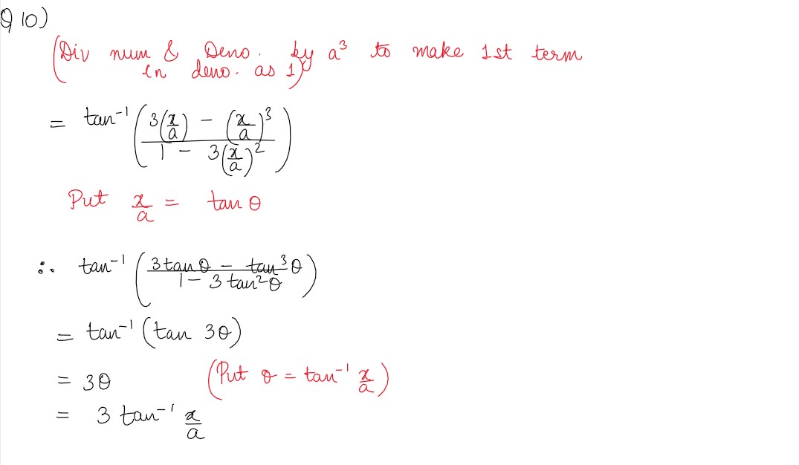
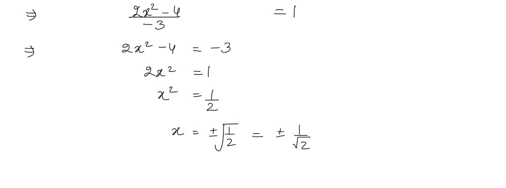

Q1
3sin-1 x=sin-1 (3x-4x3) ,x∈ [-
1
/
2
,
1
/
2
]
solutions
Q2
3cos-1 x=cos-1 (4x3-3x) ,x∈ [-
1
/
2
,1]
solutions
Q3
tan-1
2
/
11
+ tan-1
7
/
24
= tan-1
1
/
2
solutions
Q4
2tan-1
1
/
2
+ tan-1
1
/
7
= tan-1
31
/
17
solutions
Q5
tan-1
√ (1+x2) -1
/
x
, x≠0
solutions
Q6
tan-1
1
/
√x2-1
, |x| >1
solutions
Q7
tan-1(√
1-cosx
/
1+cosx
), x < π
solutions
Q8
tan-1(√
cosx -sinx
/
cosx +sinx
), 0< x<π
solutions
Q9
tan-1(
x
/
√a2-x2
), |x| < a
solutions
Q10
tan-1(
3a2 x-x3
/
a3-3ax2
), a >0; -
a
/
√3
≤ x ≤
a
/
√3
solutions

Find the values of each of the following:
Q11
tan-1[2cos (2 sin-1
1
/
2
)]
solutions
Q12
cot(tan-1a +cot-1a)
solutions
Q13
tan[sin-1√
2x
/
1+x2
+ cos-1
1-y2
/
1+y2
),|x| < 1,y>0 and xy=1
solutions
Q14
If sin(sin-1
1
/
5
+ cos-1x)=1,then find the value of x
solutions
Q15
If tan-1(
x-1
/
x-2
+tan-1(
x+1
/
x+2
=π/4 ,then find the value of x
solutions

Find the values of each of the expressions in Exercises 16 to 18.
Q16
sin-1(
sin
2π
/
3
)
solutions
Q17
tan-1(
tan
3π
/
4
)
solutions